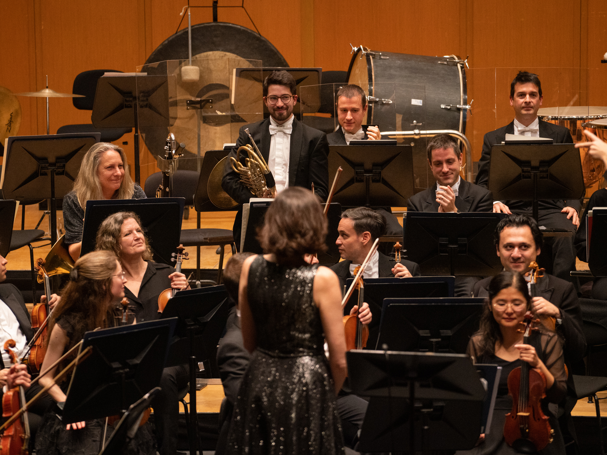
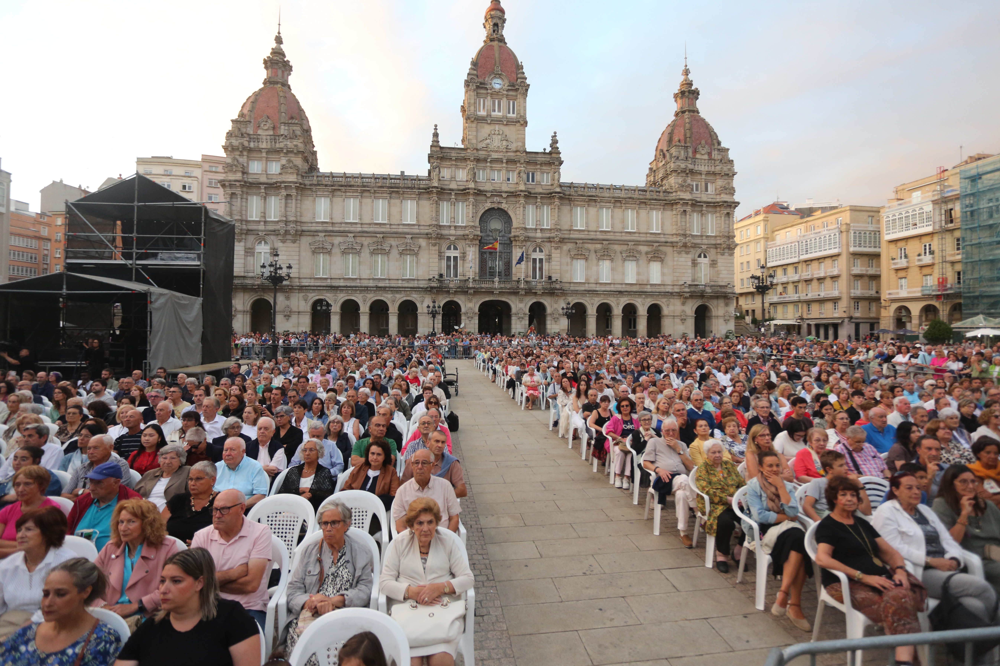
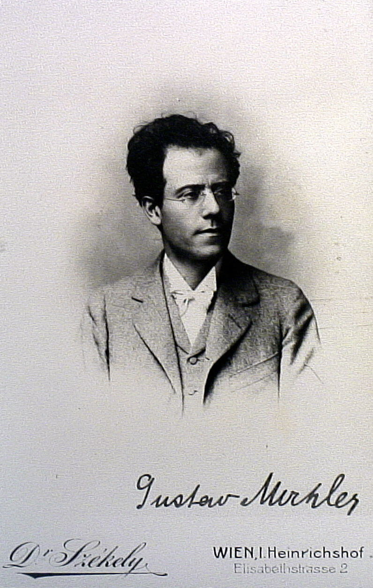
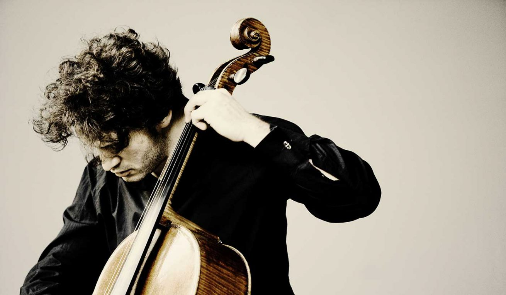
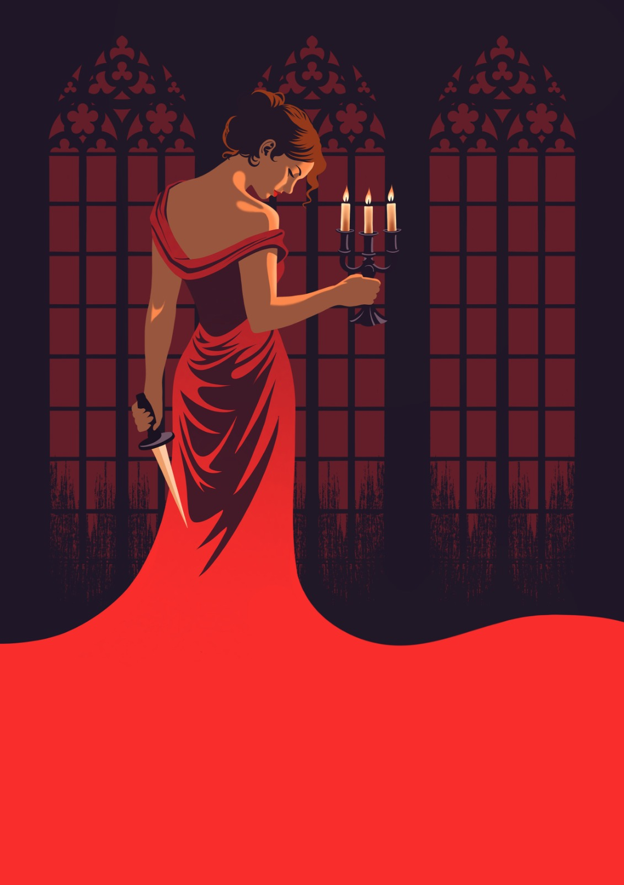
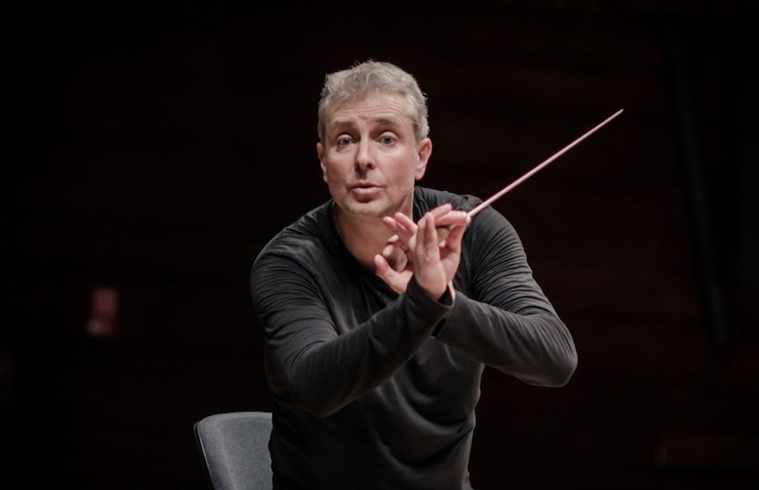
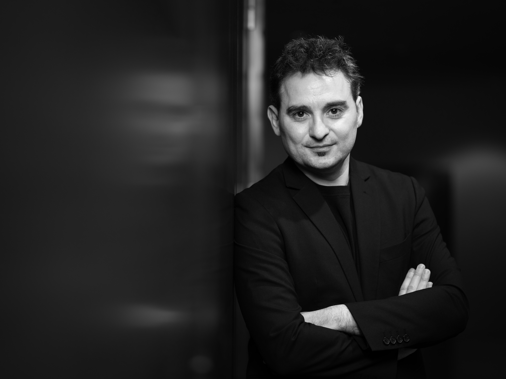

Schedule
-

22 AUG 9:00 PMMaría Pita Concert 2026
Works by Falla, Buide and Turina
Conductor: Roberto González Monjas
Soloist: Javier Perianes
Galicia Symphony Orchestra
Plaza de María Pita
-

25 SEP 8:00 PMSeason Ticket Concert Friday 1. OSG
GUSTAV MAHLER Symphony No. 3 in D minor
Conductor: Roberto González Monjas
Soloist: Yajie Zhang, mezzo-soprano
Galicia Symphony Orchestra. OSG Women's and Children's Choirs
Palacio de la Ópera. A Coruña
Buy tickets -
26 SEP 8:00 PM
Season Ticket Concert Saturday 1. OSG
GUSTAV MAHLER Symphony No. 3 in D minor
Conductor: Roberto González Monjas
Soloist: Yajie Zhang, mezzo-soprano
Galicia Symphony Orchestra. OSG Women's and Children's Choirs
Palacio de la Ópera. A Coruña
Buy tickets -

09 OCT 8:00 PMSeason Ticket Concert Friday 2. OSG
ROBERT SCHUMANN Cello Concerto in A minor, Op. 129 · ANTONÍN DVOŘÁK Symphony No. 7 in D minor, Op. 70
Conductor and soloist: Nicolas Altstaedt
Galicia Symphony Orchestra
Palacio de la Ópera. A Coruña
Buy tickets -
10 OCT 8:00 PM
Season Ticket Concert Saturday 2. OSG
ROBERT SCHUMANN Cello Concerto in A minor, Op. 129 · ANTONÍN DVOŘÁK Symphony No. 7 in D minor, Op. 70
Conductor and soloist: Nicolas Altstaedt
Galicia Symphony Orchestra
Palacio de la Ópera. A Coruña
Buy tickets -

22 OCT 7:00 PMTosca. A Coruña Opera Festival.
GIACOMO PUCCINI. Tosca
Conductor: Oliver Díaz
Soloists: Miren Urbieta-Vega (Floria Tosca), Ragaa Eldin (Mario Cavaradossi), Carlos Álvarez (Baron Scarpia), Javier Agudo (Cesare Angelotti), Enrique Martínez (Spoletta), Pedro Martínez Tapias (Sciarrone), Valeriano Lanchas (Sacristan), Antonio Facal (Jailer), Daniela Quiza (Shepherd Boy)
Galicia Symphony Orchestra. Gaos and Cantabile Choirs
Palacio de la Ópera. A Coruña
Buy tickets -
24 OCT 7:00 PM
Tosca. A Coruña Opera Festival.
GIACOMO PUCCINI. Tosca
Conductor: Oliver Díaz
Soloists: Miren Urbieta-Vega (Floria Tosca), Ragaa Eldin (Mario Cavaradossi), Carlos Álvarez (Baron Scarpia), Javier Agudo (Cesare Angelotti), Enrique Martínez (Spoletta), Pedro Martínez Tapias (Sciarrone), Valeriano Lanchas (Sacristan), Antonio Facal (Jailer), Daniela Quiza (Shepherd Boy)
Galicia Symphony Orchestra. Gaos and Cantabile Choirs
Palacio de la Ópera. A Coruña
Buy tickets -

30 OCT 8:00 PMSeason Ticket Concert Friday 3. OSG
MARIO CORTIZO As marxes RICHARD STRAUSS Cuatro últimas canciones, TrV 296 FELIX MENDELSSOHN Sinfonía n.º 5 en re mayor, op. 107, «Reforma»
Conductor: Alexander Liebreich
Soloist: Chen Reiss soprano
Galicia Symphony Orchestra
Palacio de la Ópera. A Coruña
Buy tickets -
 18 NOV 20:00h
18 NOV 20:00hChamber Music Concert
Benjamin Britten: Sinfonietta, op. 1. Bohuslav Martinu: Noneto No. 2, H. 374. Jean Francaix: Dixtuor.
Eklectica ensemble
Auditorio Sede Afundación. A Coruña
Comprar entradas -
26 NOV 20:00h
Night Fever - Symphonic Disco Music
Conductor: Isabel Rubio
Galicia Symphony Orchestra. Choir and Young Choir of Galicia Symphony Orchestra
Palacio de la Ópera. A Coruña
Comprar entradas -

04 DEC 20:00hSeason Ticket Concert Friday 5. OSG
JESÚS BAL Y GAY: Oda a Don Quijote. ROSA GARCÍA ASCOT: Suite para orquesta. RODOLFO HALFFTER: La madrugada del panadero. MANUEL DE FALLA: La vida breve (versión concierto).
Conductor: José Trigueros
Solists: Raquel Lojendio soprano, María Alba mezzo, Cristina Faus mezzo, Davíd Menéndez bajo, Juan A. Sanabria tenor, Josep Ramón Olivé barítono, Ariam Hernández tenor, Sandra Calderón cantaora.
Galicia Symphony Orchestra. Choir of Galicia Symphony Orchestra
Palacio de la Ópera. A Coruña
Comprar entradas -
05 DEC 20:00h
Season Ticket Concert Saturday 4. OSG
JESÚS BAL Y GAY: Oda a Don Quijote. ROSA GARCÍA ASCOT: Suite para orquesta. RODOLFO HALFFTER: La madrugada del panadero. MANUEL DE FALLA: La vida breve (versión concierto).
Conductor: José Trigueros
Solists: Raquel Lojendio soprano, María Alba mezzo, Cristina Faus mezzo, Davíd Menéndez bajo, Juan A. Sanabria tenor, Josep Ramón Olivé barítono, Ariam Hernández tenor, Sandra Calderón cantaora.
Galicia Symphony Orchestra. Choir of Galicia Symphony Orchestra
Palacio de la Ópera. A Coruña
Comprar entradas